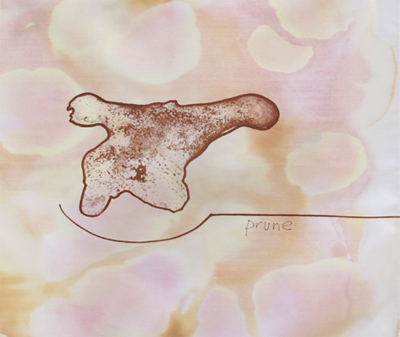
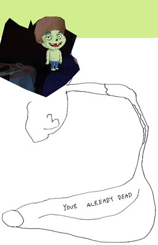

Ross Simonini
Digestive Napkins
April 10 - June 8, 2014
Green House Market
8687 N. Central Expressway #2276
Dallas, Texas 75225
In an ongoing project titled Anxiety Napkins, Ross Simonini stole cloth napkins from high-end restaurants, carried them in his pocket, and used food, beverages, ink and pencil to mark down the experience of anxiety as lived through everyday life. The Digestive Napkins on view at Green House Market are an extension of that project and are created from stains from natural, gentle laxative dyes, including prunes, senna, rhubarb, and turmeric. These napkins are each unique works, sold in sets of twelve, and can be displayed or used as a part of a home dining set, aiding the digestion for all whose laps in which they lie. Digestive Napkins sets will be available for purchase at Green House Market.
Green House Market focuses on healthy, gourmet cuisine in a casual dining atmosphere. Executive Chef Ben Hutchison heads a kitchen serving breakfast, lunch, and dinner daily. The Market also features a rotating art program that focuses on food and form. Relying on both local and internationally renowned artists, the collection is viewable throughout the marketplace. Current artists include Darren Bader, Walead Beshty, Sean Kennedy, Jason Meadows, Lucien Smith, Ulrich Wullf, Patrick Jackson, and Ross Simonini.

Zoltog 99 @ Dallas Art Fair
Patron Lounge
Fair Hours:
Friday, April 11, 11 am - 7 pm
Saturday, April 12, 11 am - 7 pm
Sunday, April 13, 12 - 6 pm
Can't believe I'm really about to type this but this is probably going to be my last summer with Ally. Shes most likely going up for sale next March/April time. I'm not 100% sure but its about 90% just now. I would love to keep her forever but I want to move on and start competing and its difficult with her because shes so spooky at fillers. I also haven't stopped growing yet I don't think so I'm starting to get too big for her and if I wait another couple of years to sell her it'll be harder because she'll be older. I will miss her so so much and it'll break my heart when she goes but I know its for the best. I'm hoping to find her a home with another young girl that she will give all of the confidence to that she has done with me. I'll be having quite a long break in for about 3 or 4 months after she sells. I'll miss her loads and she may not be mine but I'll love her just as much as I always have and will never forget her.
Shoot The Lobster
contact@shootthelobster.com
www.shootthelobster.com